Blender 3D Modeling Projects
Unity Play
Some of my software development projects can be seen on Unity Play.Robo Dance
This project was part of the XAMK Introduction to Video Games Creation Course
The robot was modeled in Blender and imported to Unity.
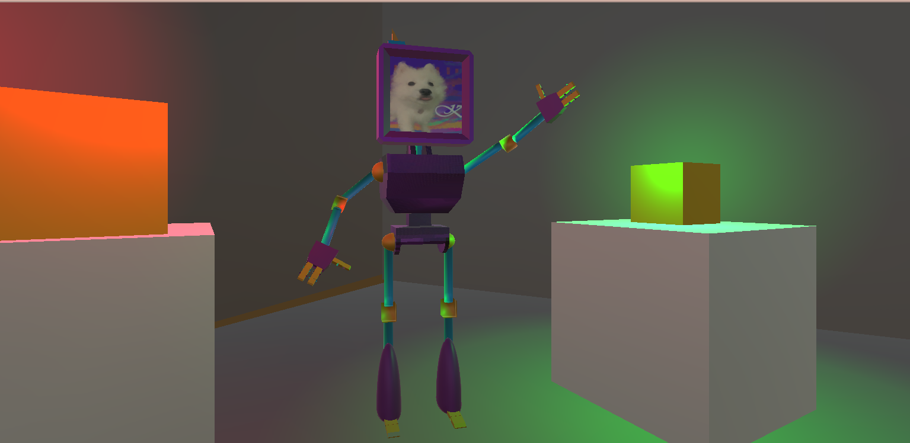 The robot in Unity 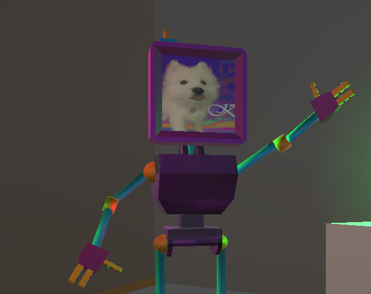 The image in the robot's face was made on Krita 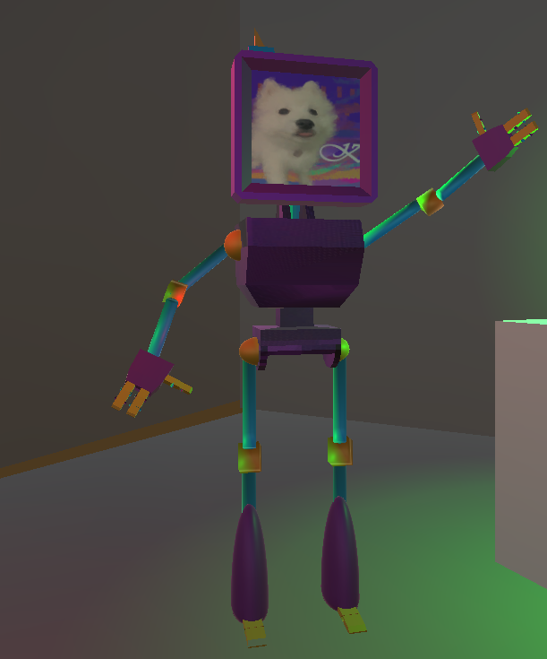 The full model
Basic 3D Design with Blender - Room Project
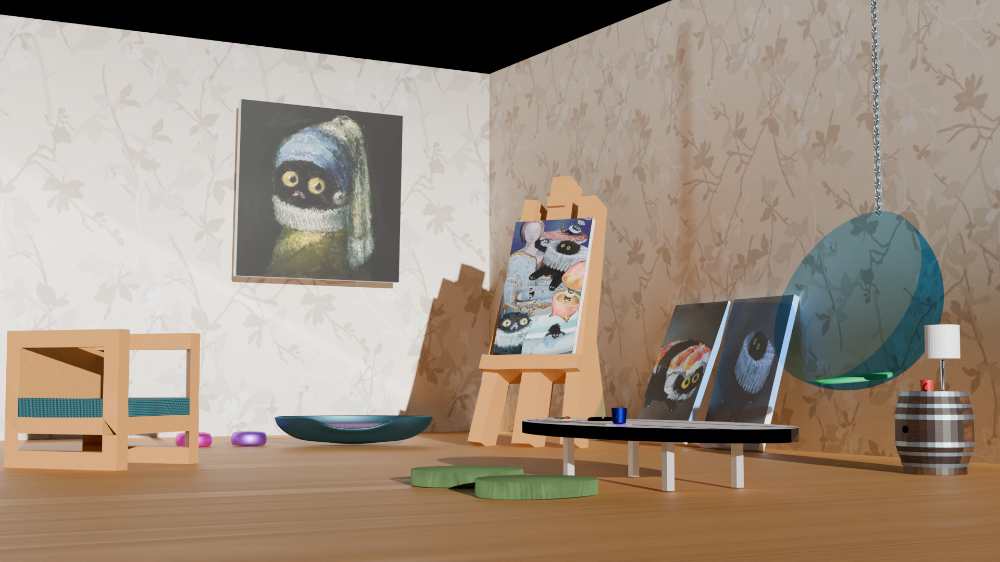 This project was the final project for my Basic 3D Design with Blender course at Haaga Helia.The goal of this course was to utilize everything we learnt in the course and implement it into a room with a minimum of 8-12 items.
This is the room I designed and modeled.
This is an artist's gallery, this artist loves painting cats, they are inspired by their pet cat.
There is a glass egg chair hanging by a chain from the ceiling. An easel with a painting. A surfboard which was refurbished as a coffee table. Coffee cups and coasters. A barrel which was refurbished as a side table. A lamp, a cat bed and food and water bowls. A plate of meatballs. An ashtray with a cigarette in it. Two cushions at the surfboard table and a side chair with a fabric texture on the cushion.
Project Grade: 54/60 Course grade: 5
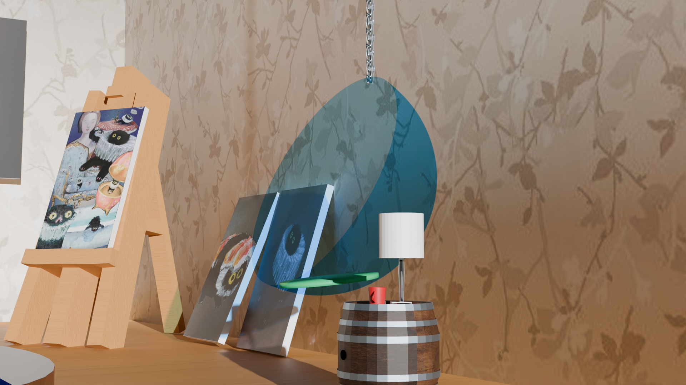 Glass egg chair 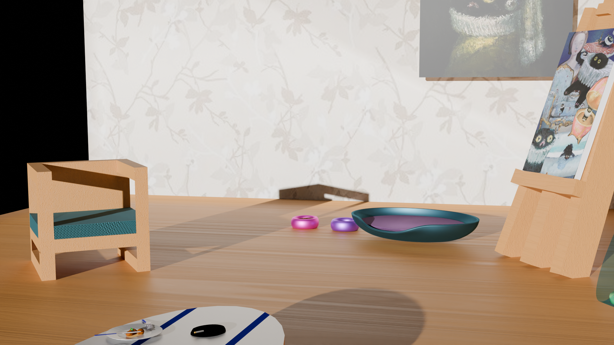 Cat bed, food and water bowls, and side chair. 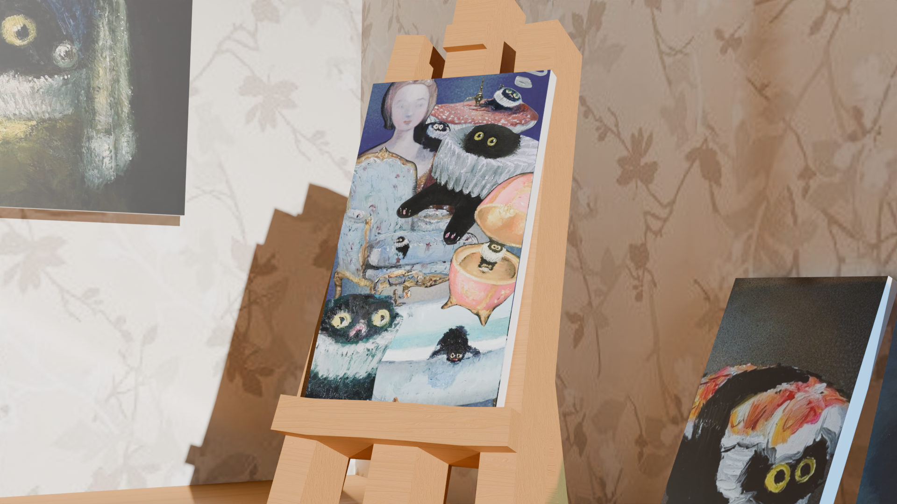 Art easel with a painting 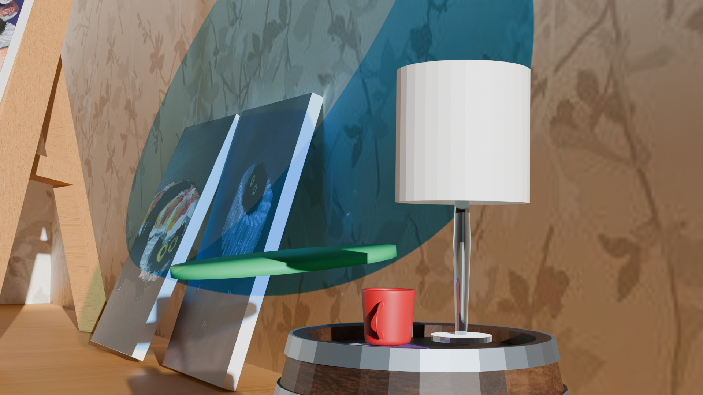 Egg chair closeup 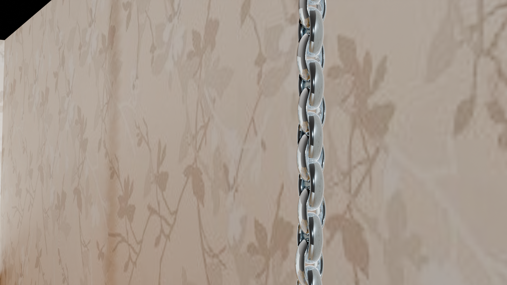 Chain closeup
Basic 3D Design with Blender - Clock Project
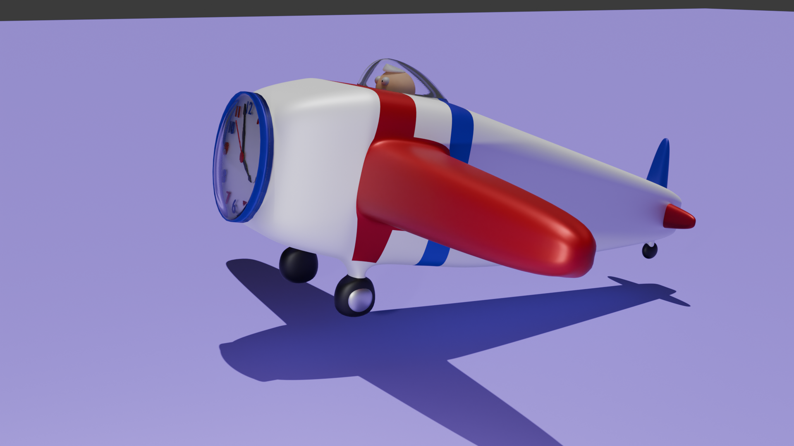 Clock project for Basic 3D Design with Blender course at Haaga Helia.This is a child's clock meant to double as a toy. It is a toy aeroplane with a clock instead of a propeller.
There is a little man in the cockpit and a glass cover over him and the clock face.
Project Grade:40/40 Course Grade: 5
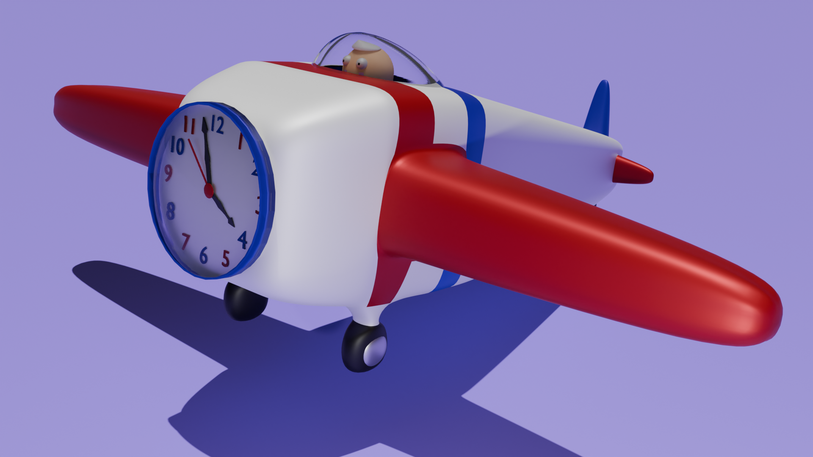 Plane clock 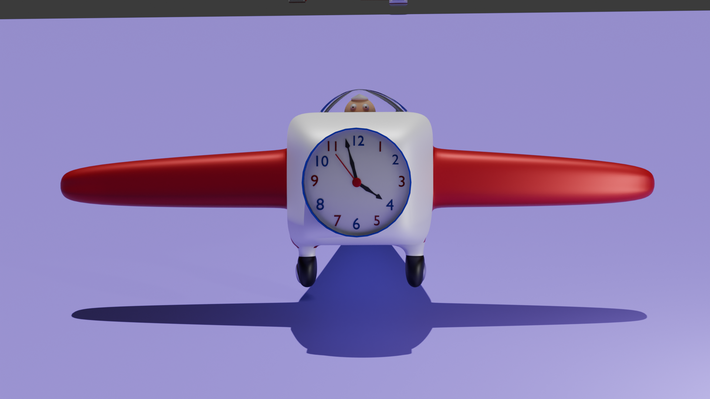 Front view
Basic 3D Design with Blender - Cutlery Project
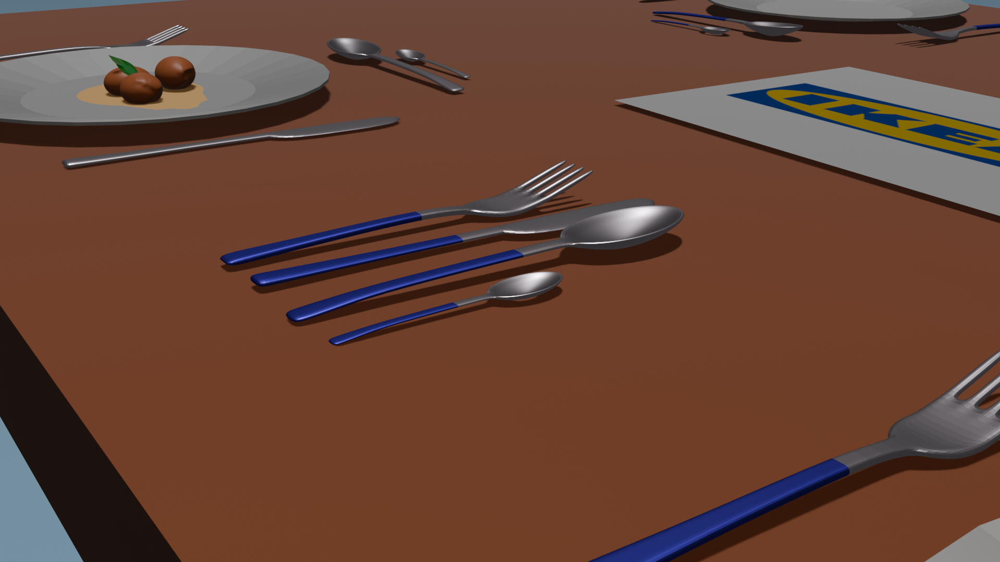 Cutlery project for Basic 3D Design with Blender course at Haaga Helia.The assignment was a cutlery set. Additionally there is a plate of meatballs on a table with the cutlery. The design is an Ikea showroom.
Project Grade:28/30 Course Grade: 5
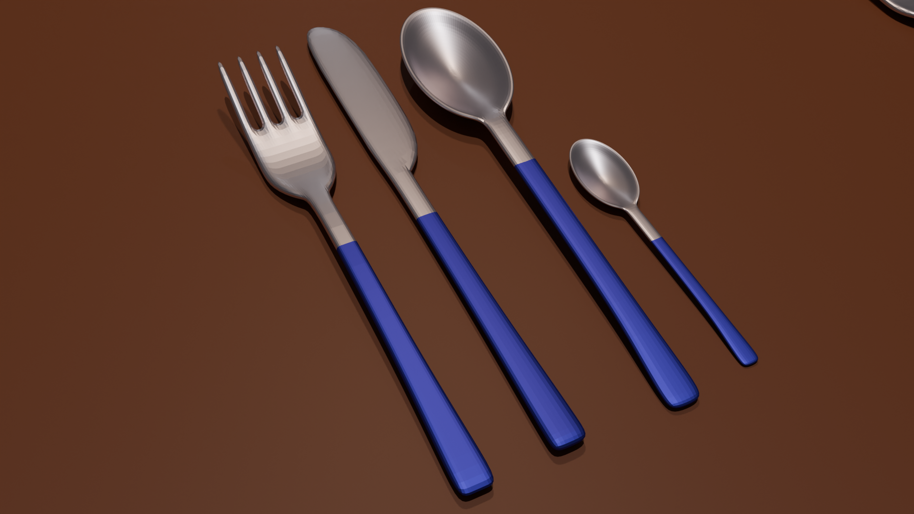 Cycles rendering of set 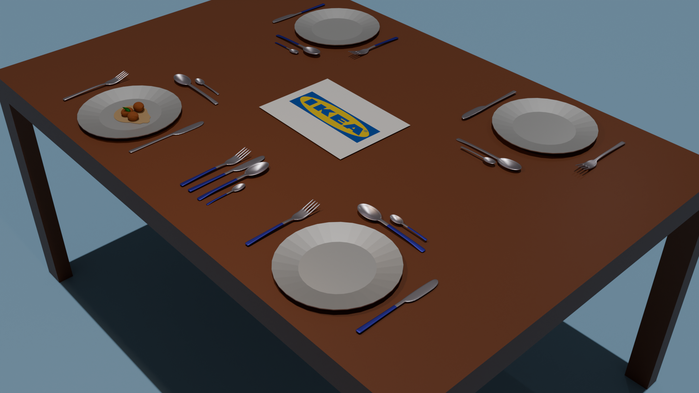 Cycles rendering 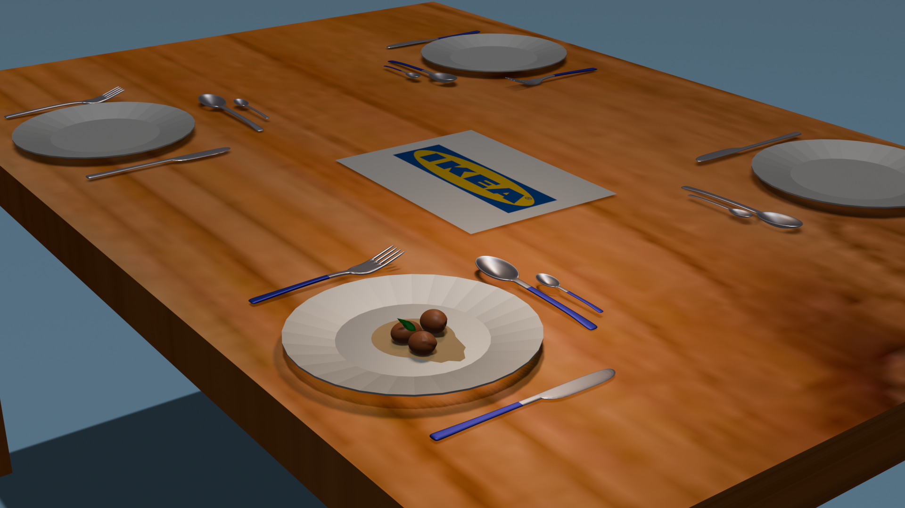 Eevee rendering of table
Basic 3D Design with Blender - Magnet Project
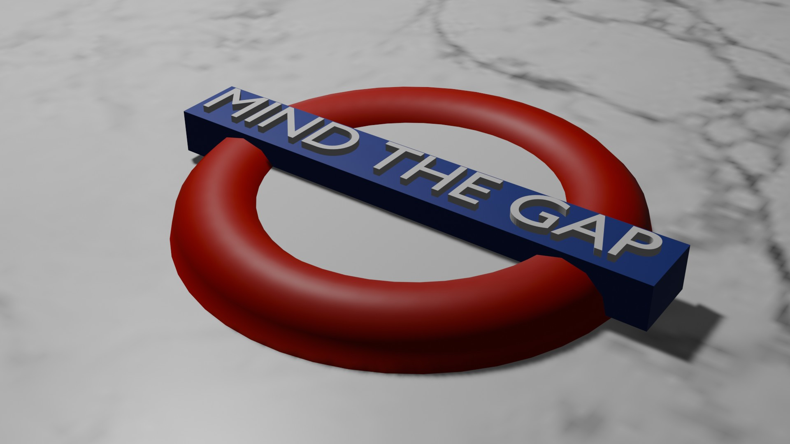 Magnet project for Basic 3D Design with Blender course at Haaga Helia.The assignment was a magnet of the London Underground sign.
Project Grade:20/20 Course Grade: 5
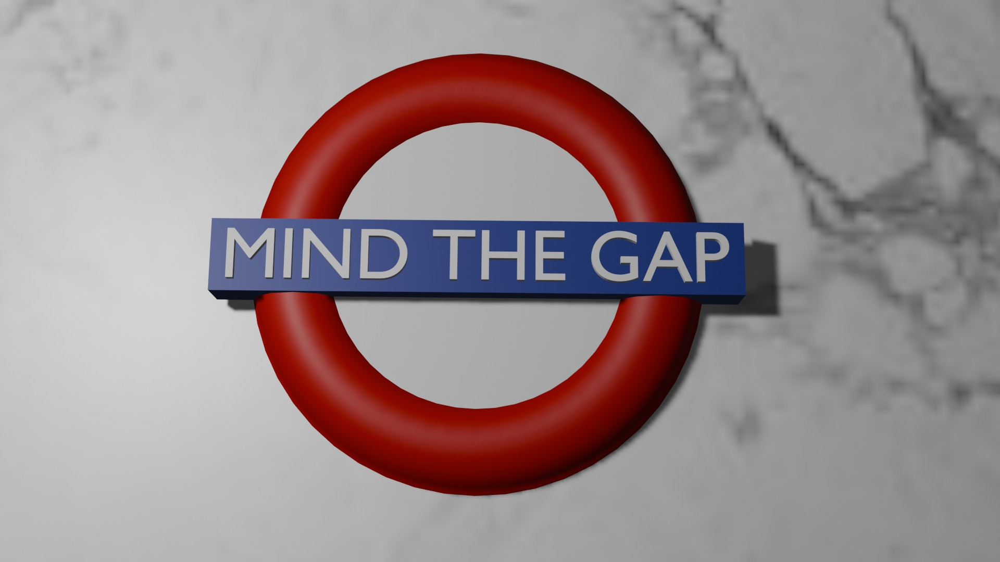 Magnet on a marble table